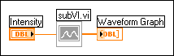

The connector pane pattern of a subVI changed since you placed it on the block diagram. LabVIEW dims the subVI on the block diagram to indicate that the connector pane pattern changed, as shown in the following example.
To correct this error, right-click the dimmed subVI and select Relink To SubVI from the shortcut menu. LabVIEW uses the new connector pane pattern and attempts to reconnect any existing wires to the new pattern. After LabVIEW reconnects all existing wires, the subVI icon appears in its normal colors. To double-check that LabVIEW made these connections properly, display the Context Help window and move the cursor over the subVI.
If you want to maintain the old wiring pattern, double-click the subVI to display its front panel and select the old wiring pattern.